Tutoriel (French version)

1 Un rapide tour d’horizon de Mendak
Mendak1 est une application R Shiny développée à but pédagogique pour introduire l’analyse statistique textuelle auprès d’étudiant·es et collègues qui ne manipulent pas de langage de programmation informatique (en particulier, R).
L’application permet de se familiariser aux outils les plus courants de la statistique textuelle à partir d’exemples simples proposés au sein de l’application ou de jeux de données que l’utilisateur·rice charge lui·elle-même dans l’application.
L’interface de l’application est en anglais, mais les corpus analysables peuvent être en français.
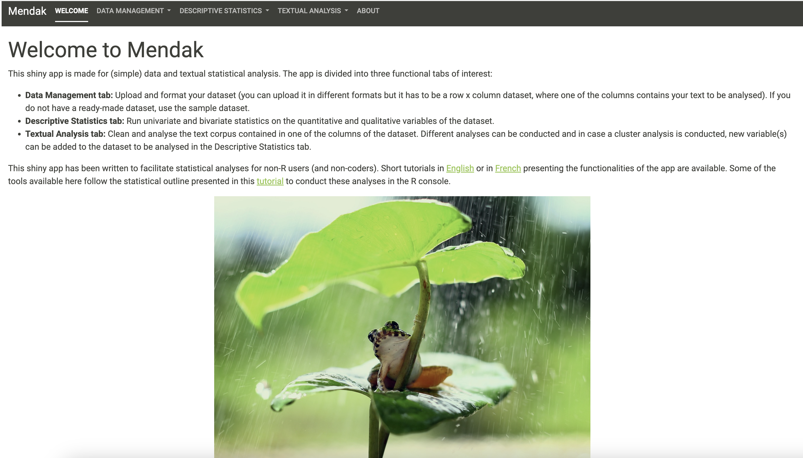
L’application ne présente pas le code R sous-jacent aux différentes opérations conduites ici, mais on pourra en retrouver quelques unes écrites dans des scripts R ici.
L’application Mendak est composée de trois onglets principaux (contenant des sous-onglets) :
L’onglet “Gestion des Données” : permet d’importer et de formater son jeu de données pour l’analyse. Différents formats d’imports peuvent être utilisés (csv, excel, rdata…), mais les données doivent être organisées dans des tableaux lignes x colonnes, où l’une des colonnes contient le corpus à analyser. Trois jeux de données d’exemples sont également proposés :
La base des annonces matrimoniales indiennes (en anglais) correspond à un extrait (de 1000 profils) d’une base de données créée grâce au web scraping d’un site internet d’annonces matrimoniales en Inde, qui ont fait l’objet d’une analyse avec Jeanne Subtil dans ce document de travail. Les informations présentées correspondent à certains marqueurs biographiques et familiaux des utilisateurs du site internet (et qui résident dans la région de l’Uttar Pradesh). Deux variables textuelles sont disponibles : la description de sa famille et la description du partenaire idéal.
La base des jugements administratifs (en français) correspond à l’ensemble des jugements rendus par des tribunaux administratifs en décembre 2024 qui mentionnent le terme “harcèlement moral”. 142 jugements sont disponibles à l’analyse et on s’est restreint ici aux jugements de première instance (on n’a donc pas gardé les jugements des Cours administratives, ni du Conseil d’État). Cette base correspond à un extrait d’un jeu de données plus large en cours d’analyse par Laurent Willemez2.
La base des articles de presse autour du “wokisme” correspond à 117 articles de la presse nationale dont le terme “wokisme” est présent dans le titre de l’article. Ces articles ont été extraits à partir des archives Europresse et mis en forme grâce à l’application EuroDecodeur également disponible en ligne, en reprenant une méthode proposée par Corentin Roquebert.
L’onglet de “Statistiques descriptives” permet de réaliser des statistiques univariées et bivariées simples sur les variables quantitatives et qualitatives du jeu de données.
L’onglet “Analyse Textuelle” est le coeur de Mendak : il permet d’abord de nettoyer son corpus, puis de l’analyser grâce à différents outils. Mendak permet notamment de mobiliser un algorithme de classification des différents textes analysés, en reprenant l’outil rainette proposé par Julien Barnier. La variable de classification peut ensuite être ajoutée au jeu de données pour être analysée dans l’onlet Statistiques Descriptives.
2 Chargement et nettoyage global de la base de données
Dans l’onglet Data Management, la fenêtre “Upload and Download” permet d’importer son jeu de données.
L’application accepte les fichiers csv, xls, xlsx et RData. Le jeu de données doit avoir une ligne par texte, où les textes sont stockés dans une colonne. Les autres colonnes sont les propriétés des textes (c’est-à-dire les caractéristiques du corpus).
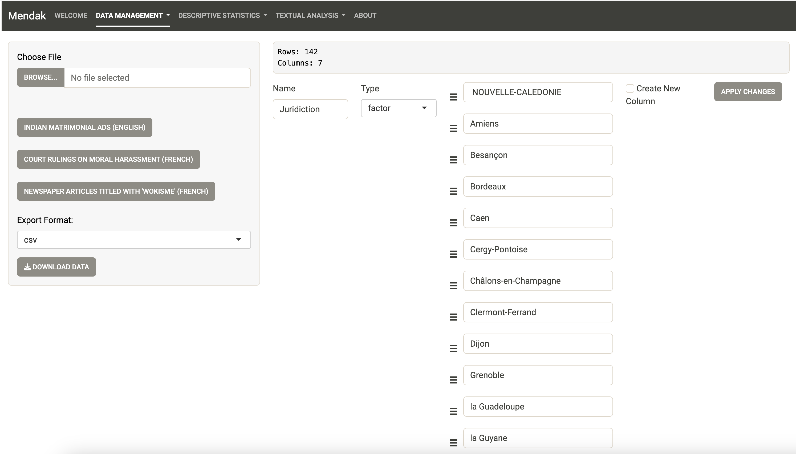
Le fichier d’exemple pour ce tutoriel correspond à celui des jugements des Tribunaux Administratifs. Comme l’indique Mendak, 142 jugements sont contenus dans le fichier csv chargé et la base comprend 7 colonnes. En réalité, le fichier original n’en contient que 6, mais le chargement a automatiquement créé une variable de comptage du nombre de mots (variable nwords_jugement) de la variable “texte” (variable jugement).
Les autres variables correspondent au tribunal où a été rendu le jugement (Juridiction), au type de jugement (Catégorie, correspondant à un jugement en référé pour une ordonnance), au rejet ou nom de la demande (Rejet, cette variable a été créée automatiquement et peut présenter des erreurs), à la date du jugement (Date_decision), et au numéro de jugement tels qu’indiqué par l’administration (NumDecision).
Dans l’application, par défaut, celle-ci tente de reconnaître le “type” des variables contenues dans le jeu de données. Elles peuvent être de trois types différents :
Si une variable est quantitative (par exemple l’âge en chiffres), elle est alors stockée comme “numeric” (numérique). C’est le format adapté pour toutes les données chiffrées qui peuvent être utilisées dans des calculs mathématiques. Notons ici que le numéro de décision est reconnu comme variable numérique mais que ce n’est pas forcément très judicieux de la laisser ainsi : le calcul d’une moyenne n’aurait par exemple aucun sens sur cette variable.
Si une variable est qualitative avec un petit nombre fini de catégories (par exemple Rejet avec Requête rejetée ou Requête non rejetée), elle est alors stockée comme “factor” (facteur).
Si une variable est qualitative avec un grand nombre de valeurs différentes et que chaque élément est long (en nombre de caractères), elle est alors codée comme “character” (caractère). Ce sont ces variables que l’application pourra utiliser pour effectuer des analyses textuelles.
Il est crucial de bien définir le type de toutes les variables lors de l’importation du jeu de données car cela conditionne les analyses que l’on pourra effectuer par la suite.
Cet onglet propose plusieurs possibilités de nettoyage des données :
Modifier le nom d’une variable
Modifier le nom des catégories pour les variables qualitatives
Changer le type de variable (si possible)
Modifier l’ordre des catégories (niveaux) pour les variables de type facteur. Ce peut être particulièrement utile pour effectuer des statistiques descriptives. Pour ce faire, cliquer sur les trois petites lignes horizontales et faites glisser une catégorie vers le haut ou vers le bas.
Modifier les étiquettes des catégories pour les variables de type facteur.
Ne pas oublier pas de cliquer sur “Appliquer les modifications” après avoir modifié une variable. Le jeu de données peut être consulté dans l’onglet “Visualisation”.
D’autres options de nettoyage des données (pourtant souvent essentielles, telles que le recodage, etc.) ne sont pas disponibles sur cette application (et il n’est pas prévu d’ajouter cette fonctionnalité !) et doivent être effectuées avant d’importer le jeu de données dans l’application.
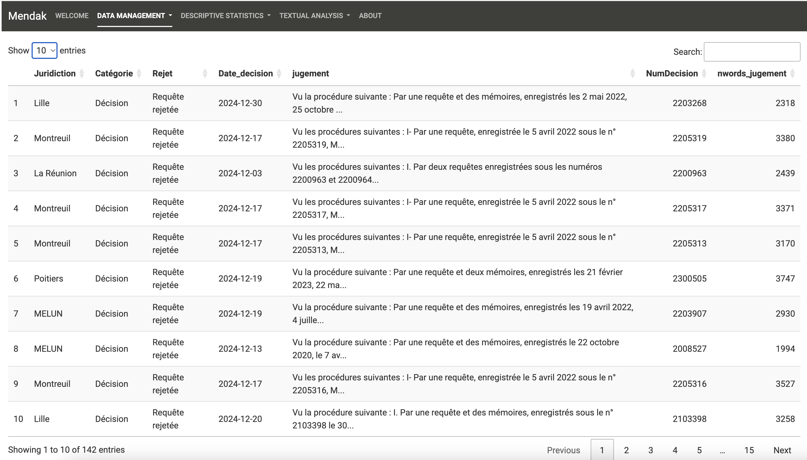
3 Quelques statistiques descriptives
Le deuxième onglet principal de Mendak permet d’explorer les variables non textuelles du jeu de données importé en effectuant des statistiques univariées et bivariées. Aucune statistique inférentielle n’est disponible ici ; l’objectif est de connaître la structure du jeu de données.
Le jeu de données comprend par exemple presque deux fois plus de requêtes rejetées qu’acceptées :
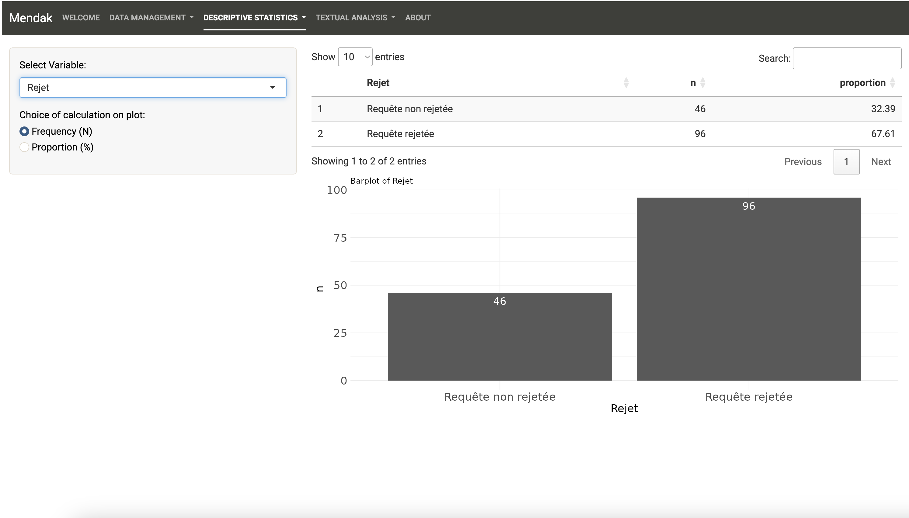
Et les requêtes rejetées font l’objet en moyenne d’un jugement moins long que celles qui ne le sont pas :
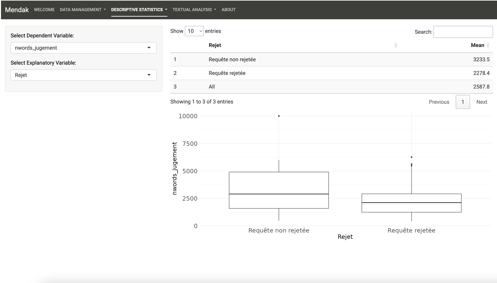
4 Analyser le corpus du jeu de données
L’onglet d’analyse le plus intéressant (et probablement le moins évident à comprendre au début) est celui lié à l’analyse textuelle.
4.1 Le nettoyage des données
Avant de procéder à une analyse du corpus constitué par les 142 textes des jugements, nous devons “nettoyer” ce corpus. Mendak a ici automatiquement sélectionné la variable à nettoyer comme étant celle du jugement, c’est en effet la seule de type “character” dans ce jeu de données (il faut faire attention à celle sélectionnée dans les cas où il y en a plusieurs !).
Les premières options proposées sont des options de “nettoyage” assez courantes dérivées du package quanteda et permettent de supprimer un certain nombre d’éléments “polluants” du texte pour se concentrer sur les mots. Je recommande donc de supprimer la ponctuation du texte, les nombres, les symboles (par exemple *$`£), de convertir en minuscules (pour que “Texte” soit équivalent à “texte”) et de supprimer les mots “vides”.
Ces mots vides sont couramment supprimés dans l’analyse de corpus car ils n’ont pas de sens particulier (ceci ou cela par exemple, plus générament des pronoms, articles, prépositions, verbes auxiliaires…) ou ils ont un sens trop ambigu pour être retenus dans l’analyse. Les supprimer permet d’éviter de “polluer” le corpus et d’étudier des associations statistiques qui n’ont en fait pas vraiment de sens. Quanteda propose des banques de mots vides (des “stop words” en anglais) et Gilles Bastin a récemment proposé une liste plus complète de mots vides qui est intégrée à cette application et qu’on recommande d’utiliser pour les corpus en langue française.
Notons qu’on peut tout à fait ajouter soi-même des “mots vides” dans Mendak, il suffit de cliquer sur “Remove words manually from corpus” et d’ajouter sa propre liste, où les mots sont séparés par des virgules.
Une option est également disponible permettant d’effectuer un nettoyage de texte plus approfondi, en utilisant la reconnaissance et l’annotation automatique de texte basées sur les banques de mots UDPipe. L’idée est de coder tous les mots des textes en les comparant à un dictionnaire de banque de mots (qui dépend de la langue dans laquelle on travaille).
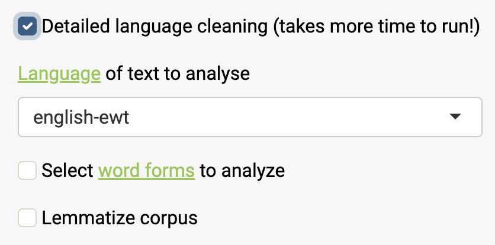
Deux options différentes sont disponibles en cochant cette option :
Sélectionner les mots selon leur “forme”. Par exemple, on peut considérer que travailler avec les noms, les adjectifs et les verbes est suffisamment riche pour saisir la variété des différents sujets dans un corpus et que les autres formes de mots risqueraient de perturber l’analyse. Ou alors on peut se dire que justement, travailler sur les verbes peut être tout à fait éclairant.
Lemmatiser le corpus. La lemmatisation consiste à regrouper les différentes formes fléchies d’un mot pour les analyser comme un seul élément. Par exemple, “meilleur” a “bon” comme lemme, “familles” a “famille” comme lemme, etc… Il existe différentes règles de lemmatisation et l’application ne propose ici qu’une version automatisée. Je recommande de ne lemmatiser que dans un second temps, après avoir exploré les analyses sans lemmatisation, pour éviter de regrouper abusivement des mots. Par ailleurs, qui “lemmatise dilemne attise” comme l’a écrit Etienne Brunet et cette opération de transformation radicale d’un corpus de textes n’est pas forcément recommandée.
En général, cette étape de nettoyage utilisant UDPipe prend un certain temps à s’exécuter et il n’est pas forcément recommandé de tenter cette procédure sur des corpus volumineux. Précisons aussi que ces options sont sans doute les plus expérimentales de l’application et je ne garantis pas leur fiabilité (d’autant que dans la pratique la non-lemmatisation apporte déjà des résultats très intéressants).
Avant de valider le nettoyage du texte, trois paramètres restent à régler :
J’ai inclus une option pour supprimer les mots courts. En fait, ce sont souvent des “mots vides” traités par la suppression des “mots vides”, mais dans un autre exemple (les annonces matrimoniales), quelques mots courts cachés subsistaient car ils étaient dans une autre langue (en hindi) que celle reconnue par l’application (l’anglais). On peut donc ici abaisser cette limite à 2.
J’inclus également une option permettant de sélectionner les mots selon leur nombre minimum d’occurrences dans le corpus. De nombreux mots sont très rares. Il y a toujours des mots qui sont des “hapax” (n’apparaissant qu’une seule fois) et la loi de Zipf prédit généralement que le mot le plus commun apparaît environ deux fois plus souvent que le suivant, trois fois plus souvent que le troisième plus commun, et ainsi de suite. Le seuil retenu ne doit pas être trop bas (cela tendra sinon dans la classification à produire des groupes avec un petit nombre de textes) mais pas trop élevé non plus (si nous ne gardons que les mots communs, alors ils ne sont pas distinctifs entre les textes du corpus). Je laisse ici le paramètre à 10.
Enfin, la dernière option n’est pas une étape de nettoyage des données en tant que telle, mais plutôt une caractéristique de la manière dont nous subdivisons les textes du copus. En effet, pour effectuer une analyse par classification, nous pouvons vouloir regrouper des paragraphes (appelés segments dans l’application) plutôt que des textes entiers. En outre, pour analyser les cooccurrences de mots (quels sont les mots les plus fréquents qui apparaissent conjointement avec d’autres mots), nous le ferons au niveau du segment plutôt qu’au niveau du texte. Ici, le découpage en segments va peut-être permettre de distinguer dans les jugements des sections liées à la présentation des faits, du jugement en tant que tel, etc. J’ai dans un premier temps retenu le découpage en segments de 40 mots tel que proposé par l’application.
Le nuage de mots permet de repérer rapidement les mots retenus qui vont faire l’objet d’une analyse statistique, ici seulement les 100 mots les plus fréquents sont représentés (sur 1457). On voit que le langage juridique a de l’importance… et que le corpus pourrait bénéficier d’un nettoyage un peu plus approfondi (mme pour madame, n’a, n’est, qu’il, etc qui sont autant de mots vides).
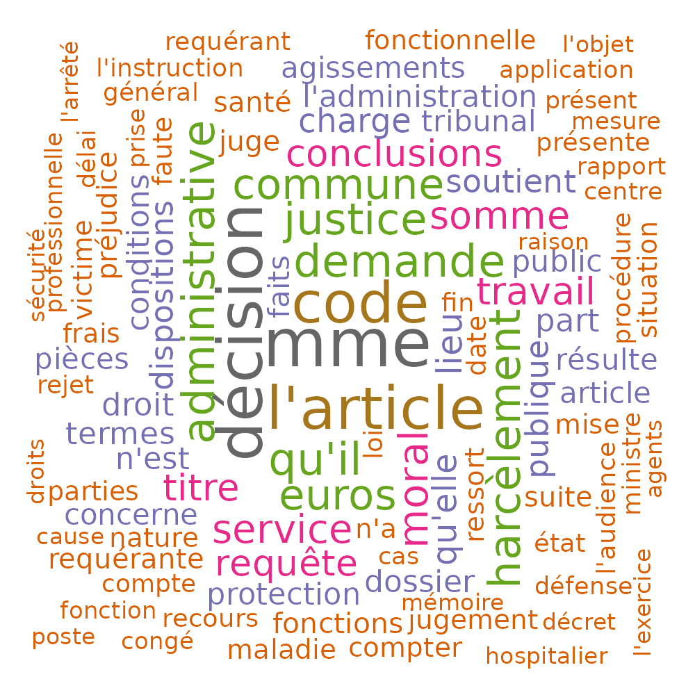
4.2 Un nuage de mots des principales oppositions
Plutôt que de calculer un nuage de mots sur l’ensemble du corpus, il est possible de calculer les mots les plus distinctifs par groupe (sur la base des variables qualitatives de l’ensemble de données). Les mots distinctifs utilisent une mesure de « keyness » basée sur la statistique du chi2 (et peuvent être trouvés dans l’onglet Tableau).
Ici, les requêtes non rejetées se distinguent avant tout parce qu’elles mentionnent le dédommagement retenu pour le préjudice subi (ou les préjudices !), le harcèlement moral est associé à d’autres préjudices de santé, et certaines requêtes semblent liées à des centres hospitaliers.
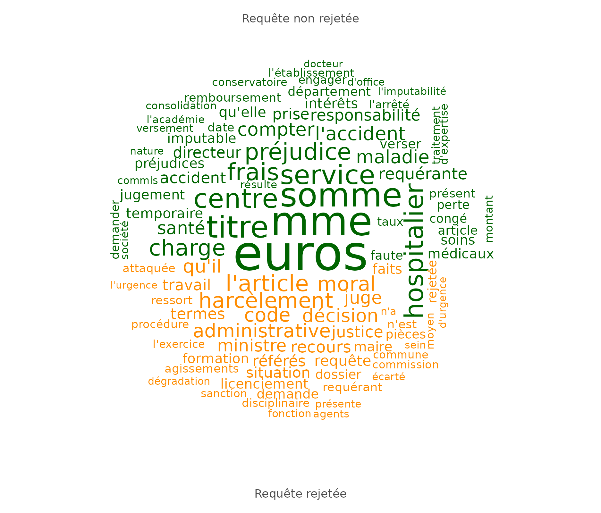
4.3 La stratification des occurrences de mots
On peut ici s’interroger si certains mots sont plus spécifiques à certains types de textes de notre corpus. Dans l’onglet précédent, on a vu que la “maladie” et la “santé” étaient davantage caractéristique des requêtes acceptées. Le harcèlement moral, redoublé de conséquences négatives pour la santé, a-t-il plus de chances d’aboutir ?
On peut par exemple observer que les jugements mentionnant la “maladie” sont certes moins nombreux dans le cas où la requête est acceptée, mais c’est aussi parce qu’il y a moins de jugements dont la requête est acceptée, de telle sorte qu’il y a relativement plus de jugements de cette catégorie qui mentionnent ce terme (52% contre 31% quand la requête est rejetée).
Notons que par ailleurs, la mention de ce terme se fait plusieurs fois dans le même jugement, et que cette pluri-occurrence est plus forte dans le cas où la requête est acceptée plutôt que quand elle est rejetée.
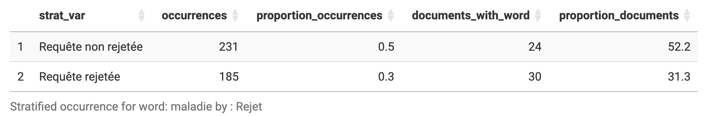
4.4 L’analyse géométrique des données
Cet onglet propose une analyse géométrique des données (AGD) permettant de repérer dans l’ensemble du corpus les associations les plus fortes entre les différents mots et les textes dans lesquels ils se trouvent.
Il s’agit d’avoir une analyse synthétique de ce jeu de données énorme constitué par le corpus des textes des jugements.
L’analyse géométrique des données est un bon outil pour cette mise à plat exploratoire puisqu’à partir d’une matrice de comptage de la présence des mots dans chacun des textes, elle permet d’identifier les mots qui sont le plus fréquemment employés avec d’autres dans le même texte et au contraire des mots qui sont rarement employés dans les mêmes textes.
En fait, ce que l’AGD dans cet onglet cherche à faire c’est :
Résumer la richesse des informations de notre corpus transformé en base de données en quelques représentations graphiques, où les principaux traits saillants de notre corpus sont résumés par des “axes”, aussi appelés “dimensions” ou encore “facteurs”.
Ces “axes” ou “dimensions” représentent les dimensions de variabilité du corpus : deux mots proches dans la représentation graphique sont plus souvent qu’en moyenne ou que par hasard employés dans les mêmes textes, et deux mots éloignés dans la représentation sont moins souvent qu’en moyenne employés dans les mêmes textes. Par ailleurs, deux textes proches dans l’espace factoriel ont une proximité sémantique : ils se caractérisent par des mots communs qui leur sont typiques et sont différents des autres.
Le premier “axe” ou la première “dimension” va résumer davantage d’information que la deuxième, qui va elle même en résumer moins que la troisième, etc. Chaque information apportée par une dimension est indépendante de l’autre, de sorte qu’on n’a pas de redondance de l’information.
En d’autres termes, on ne classifie pas encore (ça se passe dans un autre onglet), mais on commence à s’en approcher puisqu’on cherche à relever des proximités et des différences.
On propose ici deux variantes de l’AGD :
une Analyse en Composantes Principales (ACP) où le tableau analysé est de la forme individu statistique (ici, les jugements) x variables (ici, les mots du corpus), et on utilise la corrélation de Spearman plutôt que celle de Pearson pour étudier les associations entre mots (en effet, les distributions des mots ne suivent pas une distribution statistique “normale” et la petite variante sur la mesure de la corrélation vise à pallier ce problème). Une telle ACP se nomme aussi “ACP sur rangs” (car on calcule la corrélation des rangs).
une Analyse Factorielle des Correspondances (AFC) où le tableau analysé est de la forme lignes (jugements) x colonnes (mots du corpus), donc un tableau de contingence. Cette méthode est la plus classiquement utilisée en AGD lorsqu’on a affaire à des textes. Cette petite vidéo est une introduction très rapide à l’AFC.
Ici, en employant l’AFC on voit que le premier axe horizontal est complètement structuré par la spécificité des ordonnances en référés qui structurent la partie droite sur l’axe 1.
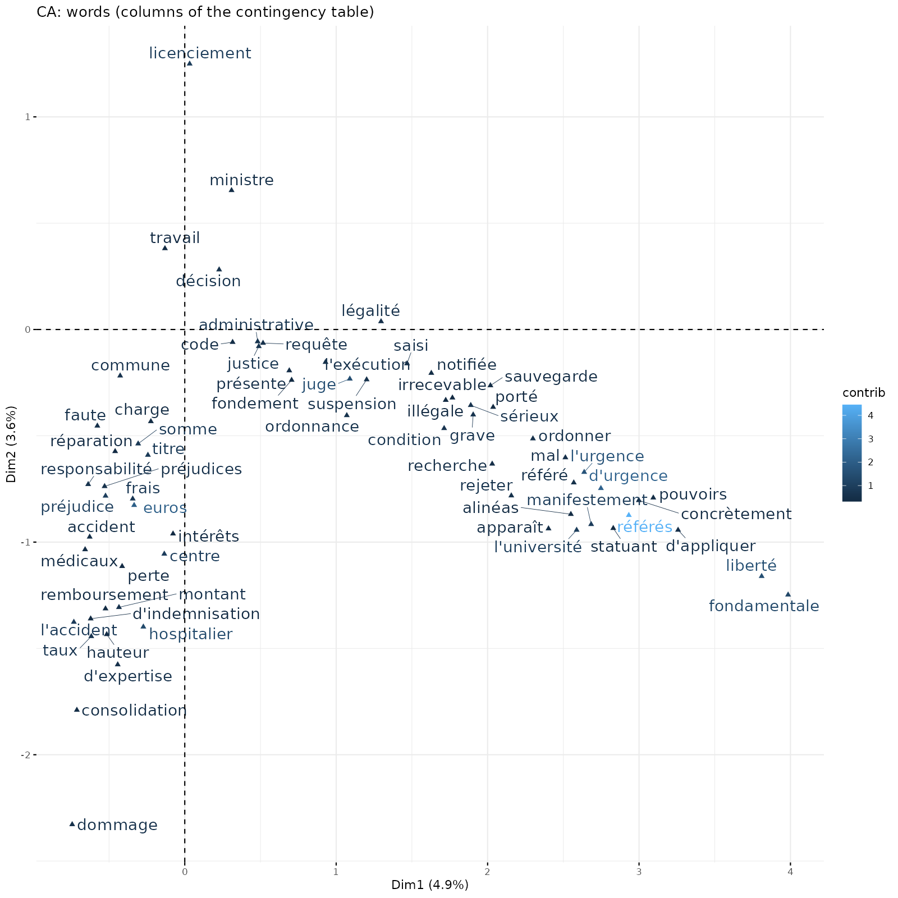
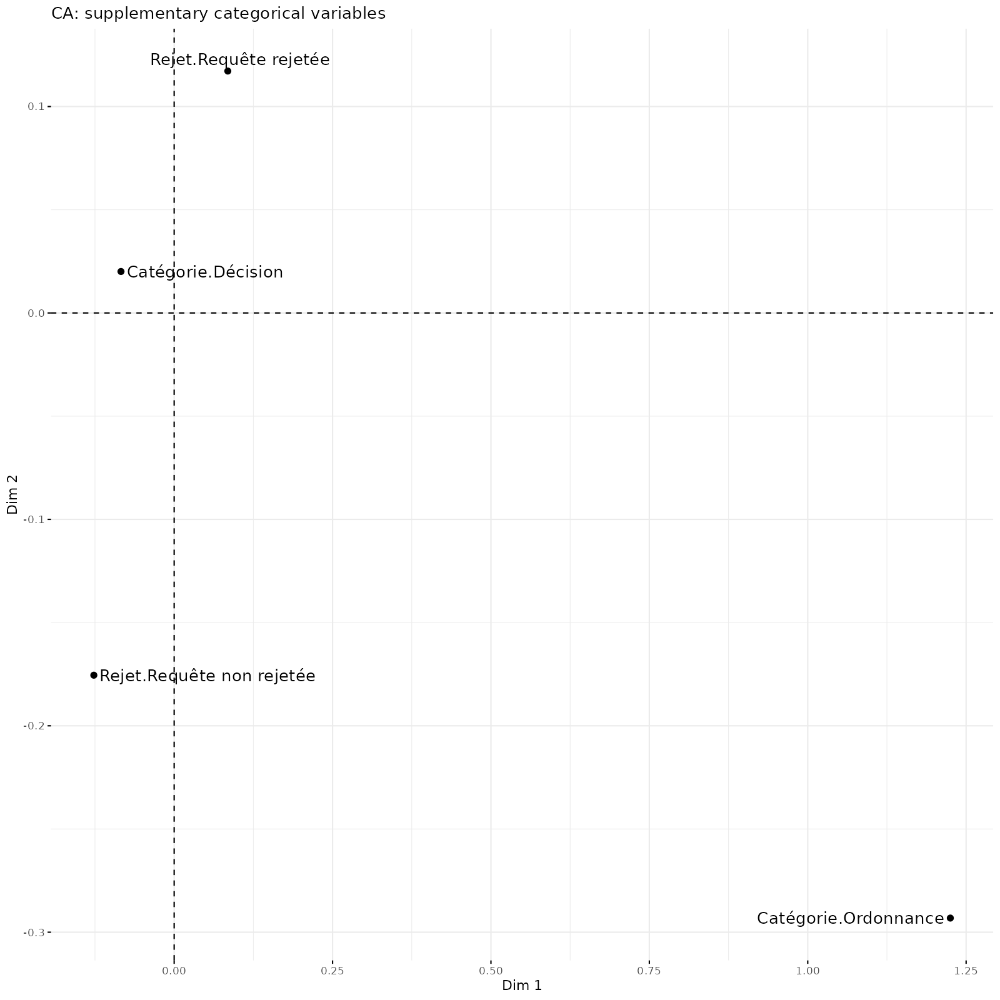
Le deuxième graphique est obtenu en ajoutant les caractéristiques des textes : ces variables supplémentaires (et non actives) ne participent pas à la structuration des axes, mais facilitent leur interprétation en repérant des associations entre types de textes et mots associés.
Par ailleurs, on voit aussi que les axes 2 et 3 semblent apporter une information à peu près équivalente dans le nuage des mots (c’est l’onglet explained variance of each factorial dimension).
Regardons donc de plus près les axes 2 et 3 associés dans le même plan factoriel (axe 2 à l’horizontal et 3 à la verticale).
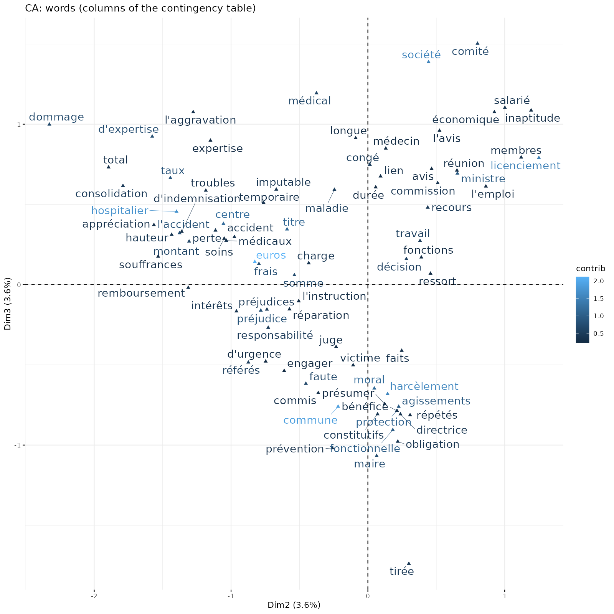
Ce plan factoriel distingue des requêtes pour harcèlement moral dans trois types de structures : en haut à gauche dans des centres hospitaliers, en haut à droite dans des entreprises qui ont des délégations de service public (on se plaint alors de licenciement) et en bas auprès de communes.
4.5 Le contexte des mots
De manière plus qualitative, on peut rechercher le contexte des mots dans les phrases. Il suffit de taper un mot (ici, un terme non nettoyé !) et Mendak affichera les différentes phrases dans lesquelles il est utilisé.
La recherche du mot “soins” permet de révéler une possible ambiguité de sens : le terme a un double usage, le soin médical, mais aussi l’expression “par ses soins”. Il peut être plus sage dans une version plus avancée d’ajouter ce terme parmi les “mots vides”.
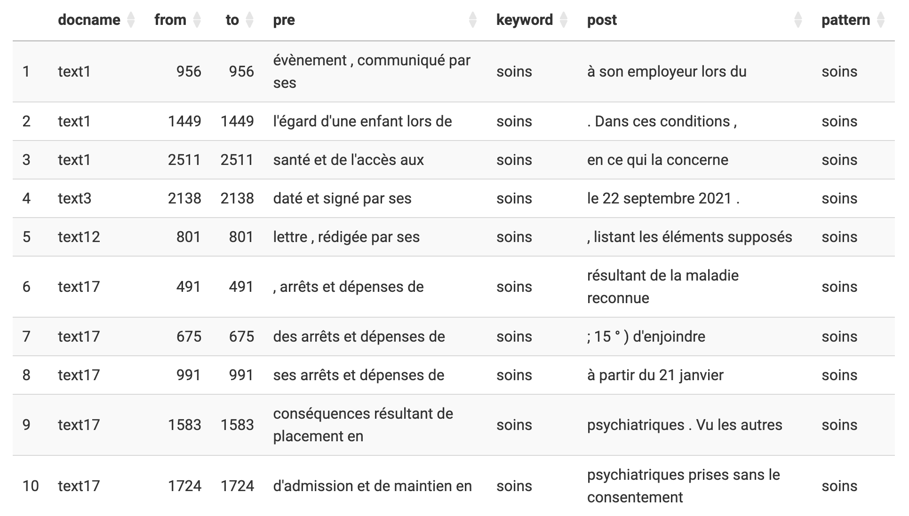
4.6 La cooccurrence des mots les plus fréquents
L’étude des cooccurrences dans l’analyse textuelle a été soulignée comme une amélioration clé pour obtenir des informations sur les textes. Nous définissons ici une cooccurrence comme l’association qui relie des mots dans un texte, ces associations se situant au niveau du segment (paragraphe) plutôt que du texte entier.
Tout d’abord, on peut visualiser les 50 mots les plus fréquents (mots nettoyés) dans le corpus et leur niveau de cooccurrence, comme le montre le réseau ci-dessous. La largeur des lignes représente le degré de cooccurrence (une largeur plus importante signifie que les mots cooccurrent plus souvent) et les mots positionnés au centre cooccurrent davantage avec d’autres mots.
Ce réseau de mots permet de repérer les mots juridiques (on s’interroge s’il y a “préjudice”), les conditions associées au harcèlement moral (la santé), etc (attention à jouer sur la taille des labels en dessous du graphique pour faire apparaitre tous les mots, la taille des mots étant proportionnelle à leur fréquence d’occurrence).
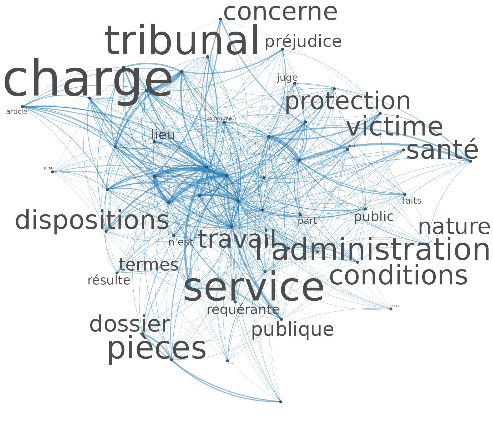
4.7 La cooccurrence d’un mot avec les mots les plus fréquents
On peut aussi chercher un mot spéficique et la manière dont dans le même segments de mots, il est associé de manière fréquente à d’autres termes, ici par exemple avec la recherche du mot “agissements”, fortement associé au harcèlement moral, mais aussi à sa définition (il faut qu’il y ait des agissements “répétés” pour que le harcèlement soit caractérisé, ou que ce soit “constitutif” de harcèlement comme l’écrivent les juges).
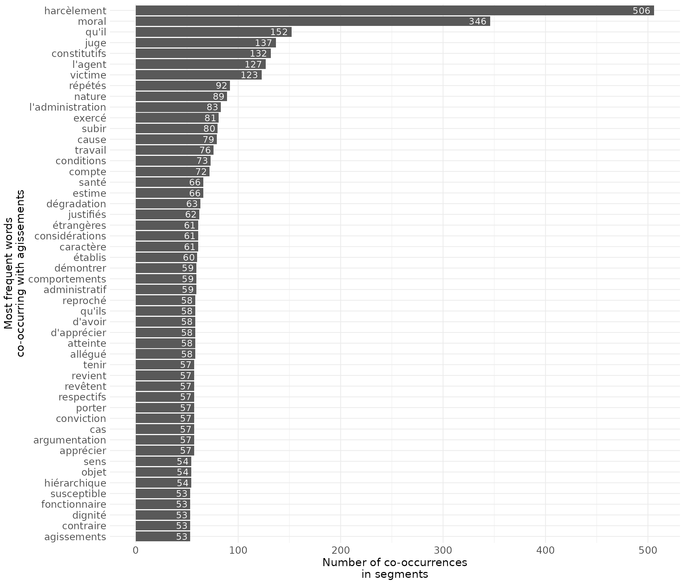
4.8 La classification des textes
L’une des principales caractéristiques de l’application est d’inclure des algorithmes de classification pour regrouper les textes et identifier les différents sujets/univers lexicaux.
Quelques éléments sur le fonctionnement des algorithmes proposés par Max Reinert (basés sur la classification hiérarchique descendante) :
Julien Barnier fournit une description de l’usage de cet algorithme de classification et une description approfondie complète des algorithmes (nous utilisons exactement les mêmes fonctions du paquet rainette).
Vous pouvez également regarder son tutoriel au séminaire Mate-shs.
Si les textes analysés sont assez courts, je recommande d’effectuer la classification sur les “documents” (c’est-à-dire les différents textes, une ligne par texte dans le jeu de données initial).
On retient alors ici une classification des jugements en quatre groupes qui semblent faire ressortir différents motifs de requêtes ou types de procédure. Le premier onglet des résultats fait apparaitre un dendrogramme comme ci-dessous, c’est à dire un “arbre de classification”, qui montre plusieurs choses :
les “branches” permettent de rendre compte de la plus ou moins forte proximité des classes de jugements découpés (ainsi le cluster 1 est le plus différent des autres clusters, et les clusters 3 et 4 sont les clusters les plus proches)
la taille des clusters, où le cluster 1 rassemble 25 jugements, soit 18% des jugements analysés
les mots les plus “typiques” associés à chacun des clusters (en bleu) et éventuellement ceux qui sont les moins associés à chacun des clusters (en rouge)
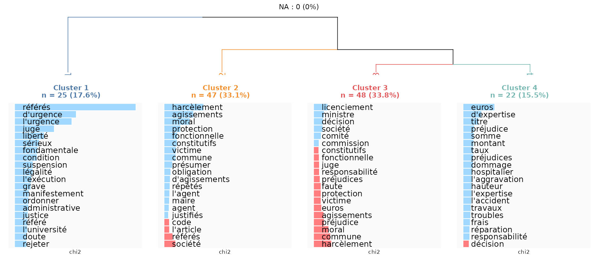
Cette dernière information est cruciale pour interpréter les différents types de jugements, qu’on peut également interpréter en retournant au texte (c’est l’onglet Documents/Segments by class) :
Le cluster 1 correspond à des ordonnances en référés qui sont pris en cas d’urgence. Ces jugements ne jugent pas sur le fond d’une affaire, mais demandent une “suspension” (d’une décision administrative). De manière intéressante, l’université semble être une administration où ces demandes sont assez fréquentes…
Le cluster 2 correspond à des requêtes où les requérants avaient sollicité une “protection fonctionnelle” auprès de leur hiérarchie (pour se protéger de faits de harcèlement moral) et qui leur a été refusée.
Le cluster 3 correspond à des affaires où les requérants contestent leur licenciement.
Le cluster 4 se distingue parce que les demandes des requérants sont avant tout des demandes de réparation en termes financiers (au vu d’un ou de plusieurs préjudices subis).
4.9 La classification des segments des textes
L’autre type de classification consiste à classer non pas les textes (les différents jugements), mais les “segments” ou paragraphes de ces jugements. Cette méthode de classification est plus couteuse et prend un peu plus de temps à tourner.
On peut commencer par réaliser une classification “simple”, pour décider du nombre de classes le plus judicieux à retenir, avant de renforcer la robustesse de la classification grâce à une classification “duale”.
L’un des intérêts de ce type de classification quand on a ici affaire à des jugements, c’est que ces textes sont assez formatés, avec une partie qui rappelle les requêtes des requérants, une partie qui expose l’argumentaire juridique, une partie sur les décisions du tribunal.
Pour faciliter les calculs, on a ici créé des segments de 200 mots (onglet Text cleaning), et le nombre minimal de mots doit être respectivement de 20 et 25 dans la classification duale.
Comme à chaque fois, il y a au moins une classe qui rassemble beaucoup de segments de textes, et pour l’exemple on a été assez maximaliste et on a ici gardé 9 classes.
L’onglet de Correspondance Analysis permet de visualiser la proximité des classes entre elles en fonction des mots les plus utilisés.
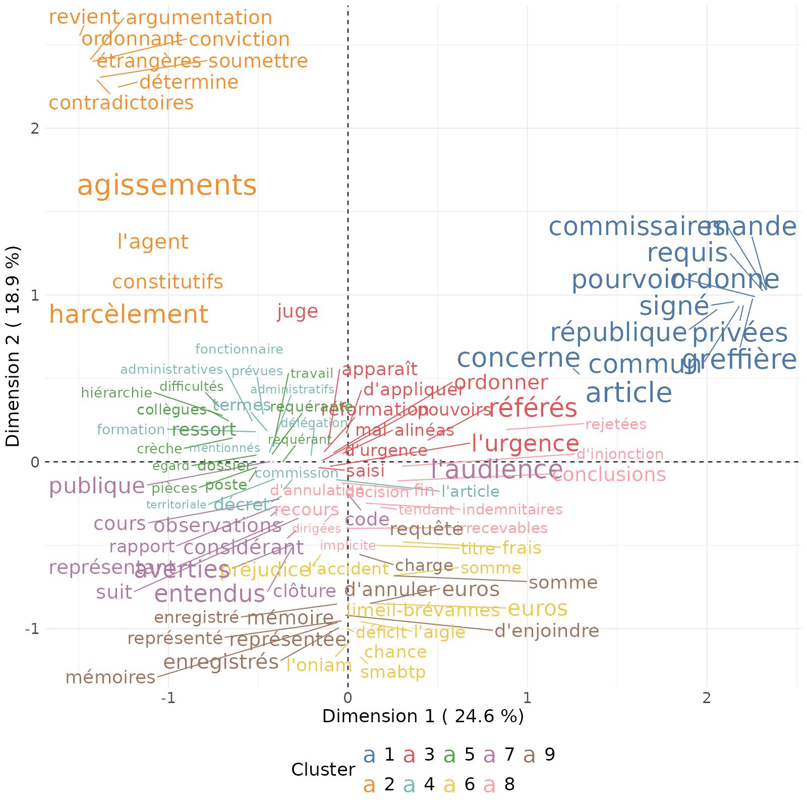
On voit que les clusters 1 et 2 se détachent du reste du nuage de mots : il s’agit de clusters assez spécifiques à certains segments des jugements qui sont les conclusions des jugements où est affirmé à qui la décision doit être notifiée :
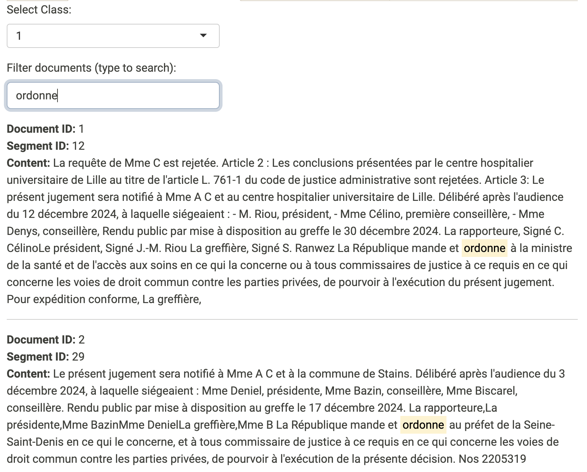
Le cluster 2 a quant à lui trait à l’argumentation juridique et correspond à des passages du jugement où on cite précisément des articles de loi (notamment sur la définition du harcèlement moral et la protection fonctionnelle).
Le cluster 3 semble spécifique aux paragraphes des jugements en lien avec les requêtes en référés, où le caractère d’urgence est important.
Les clusters 4 et 5, assez proches les uns des autres, sont aussi les plus conséquents en nombres de segments de textes. Ces clusters ont davantage trait aux arguments que “fait valoir” le ou la requérant·e dans sa requête. Ces paragraphes relatent les conditions de travail auxquels ont été soumis les requérants et la manière dont ces conditions sont relatées puis médiées au cours du jugement pour être constitutive (ou non) de harcèlement moral.
Les clusters 6 et 9 sont également proches et ont trait à la décision de justice qui permet une “réparation” du “préjudice” subi, notamment ici en termes monétaires.
Le cluster 8 concerne la motivation des décisions (les “motifs”), avec ces débuts de phrase assez typiques : “Vu le code général de la fonction publique…” ou les phrases commençant par un verbe au participe présent “Considérant ce qui suit…”.
Au final, le découpage en paragraphe du jugement permet de retrouver la structure argumentative typique des jugements administratifs.
4.10 L’ajout des variables de classification à la base de données
Après avoir classé les textes, il est possible d’ajouter ces informations au jeu de données initial :
Si l’algorithme de classification a été effectué sur des textes/documents, chaque ligne de l’ensemble de données peut se voir attribuer un numéro de cluster stocké dans une variable unique (choisissez le nom de la variable avant d’ajouter la variable cluster dans l’ensemble de données).
Si l’algorithme de classification a été effectué sur des segments, chaque ligne de l’ensemble de données appartient potentiellement en partie à différents clusters, car chaque ligne = un texte divisé en plusieurs segments. Dans ce cas, l’application crée différentes variables (autant de variables que le nombre de clusters dans la partition) et pour chaque colonne calcule la proportion (en %) des segments du texte qui appartiennent à ce cluster. Par exemple, si pour le texte 1, 3 segments sur 10 sont classés dans le cluster 1, alors la colonne cluster 1 indiquera 30 pour cette ligne.
Ces variables peuvent ensuite être analysées dans l’onglet Statistiques descriptives.
Par exemple, par rapport à notre classification des documents, on voit ici qu’alors que les requêtes motivées la contestation d’un licenciement abusif concernent 34% de l’ensemble des requêtes, elles représentent 41% des requêtes détectées comme non rejetées (donc acceptées, et apportant une réparation à un préjudice subi).
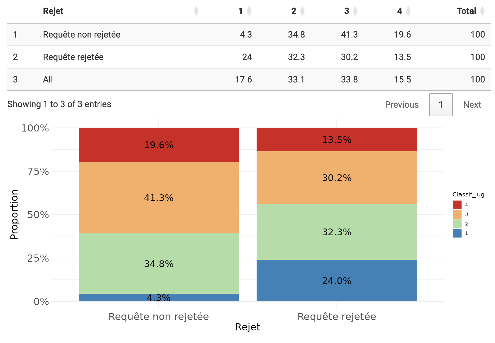
5 Quelques mots pour finir
Les outils présentés ici permettent de réaliser des explorations statistiques de corpus et il reste à analyser plus précisément les logiques sous jacentes aux différentes associations mesurées ici (rappelons à ce propos que je ne suis ni juriste, ni sociologue du droit administratif…).
Les associations et les classifications ne sont pas “magiques” et ne font produisent pas du “sens” par elles-mêmes (mais qui demanderait cela à des tris croisés ou des régressions ?). Il est difficile de comprendre les analyses statistiques sans avoir préalablement au moins lu en diagonal son corpus de texte.
Néanmoins, les analyses peuvent conforter des intuitions, apporter de nouvelles pistes d’explorations et, on l’espère, nourrir de manière fertile les hypothèses d’un projet de recherche.
Footnotes
L’application est disponible en ligne à ces deux adresses : https://shiny.ens-paris-saclay.fr/app/mendak et https://analytics.huma-num.fr/Mathieu.Ferry/mendak/. Normalement les deux versions sont à jour mais on privilégiera la première pour un peu plus de puissance de calcul et la seconde si on veut être sur d’avoir la version la plus à jour.↩︎
Je le remercie par ailleurs pour m’avoir proposé ce corpus de textes à analyser et pour avoir bien voulu relire et noter les multiples coquilles d’une version précédente de ce tuto.↩︎